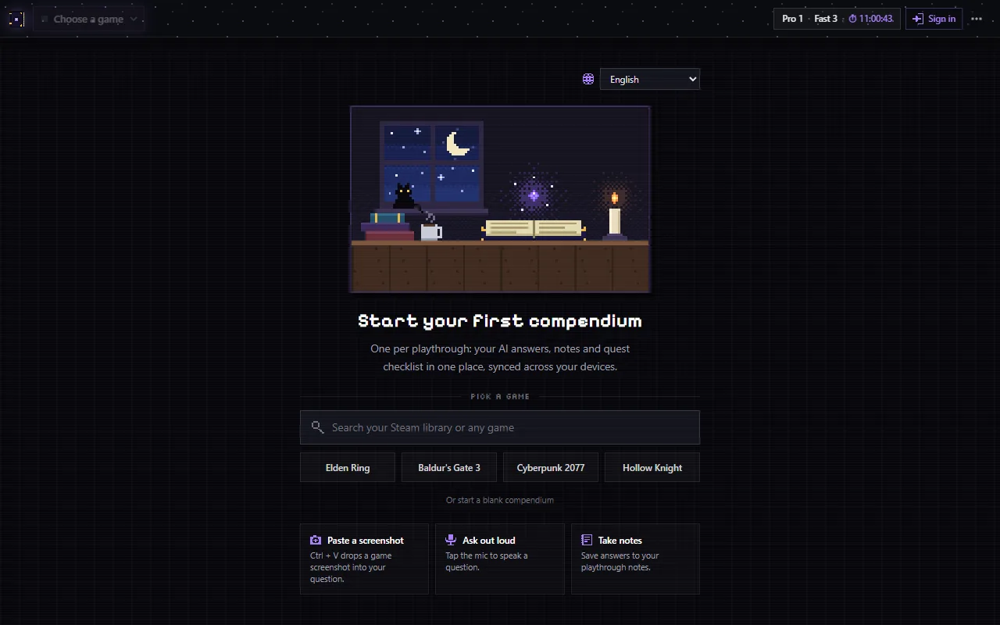

Quest Compendiumゲームの隣に寄り添うAIゲームガイド
画面を見るだけで状況を認識。ゲームを中断することなく、ヒントやボスの攻略法、世界観に沿ったサポートをお届けします。
Windows用オーバーレイ、各種ブラウザ向けWebアプリ、Steam Deck用プラグインに対応
バージョン 0.6.1 ベータ。無料でお試し：クレジットカード不要、1日あたりPro質問2回＆Fast質問5回まで。
直接ダウンロードをご希望ですか？ インストーラーをダウンロードしてください。Windowsで警告が表示される場合があります（理由は？).

Quest Compendiumを手に入れよう
プレイスタイルに合わせて選べます。1つのアカウントで3つのプラットフォームすべて利用可能。
Windows用オーバーレイ
フル機能を体験：最前面オーバーレイ、画面上マーカー、コントローラー対応、プレイ用メモ帳、Steam連携、音声読み上げを搭載。

Windows 10/11（64ビット）。Microsoft Store経由でインストールとアップデートが可能。
または、GitHubから インストーラーを直接ダウンロード することもできます。まだコード署名がされていないため、Windowsで警告が表示される場合があります（理由は？).
Webアプリ
インストール不要。サブモニターやスマホ、またはゲームの横でブラウザタブを開いて利用可能。ゲストとして試すことも、サインインしてメモを同期することもできます。
主要なモダンブラウザに対応。
Steam Deck用プラグイン
Decky Loader用プラグイン。クイックアクセスmenuを開き、「詰まった」などのプリセットをタップするだけで、プレイ状況に合った回答が得られます。画面に関する回答ではスクリーンショット上に注目ポイントがマークされ、ガイドを開いたままプレイを続けられます。
- インストール Decky Loader
- Deckyの設定で次をオンにします： Developer Mode
- 次を開きます： Developer、そして選択： URLからプラグインをインストール 以下を入力：
https://github.com/TuriusX/Quest-Compendium-Decky/releases/latest/download/quest-compendium-decky.zip
Deckyストアにはまだないため、手動でインストールします。 GitHubでソースコードを見る
ゲーム画面の中に、あなた専用のガイドを
本サイトの無料ガイドがアプリ内に組み込まれているため、わざわざAlt+Tabでwikiを見に行く必要はありません。
クエストログで手順をチェック
クエストログがゲームの横でガイドの手順をトラッキング。不要なときはサッと隠せます。
取り返しのつかない要素も、見逃す前に
ガイド対象のエリアについて質問すれば、そこで見落としがちな要素も最後にまとめて教えてくれます。
画面の「ここ」について質問できる
スクリーンショットを送って、まさに今いる場所について質問できます。Windowsなら、回答に出てきた場所を画面上に直接マーキングすることも可能です。
Free guides: what not to miss
Area-by-area checklists of items, secrets, missables and enemy weaknesses, so you never walk past the good stuff.


初期プレビュー機能（Windows版）
画面上マーカー機能
回答がゲーム画面内の要素に関係している場合、Windows版アプリならその位置に番号付きラベルを直接表示。回答内のチェックリストと連動します。マーカー機能は登場したばかりで現在も改良中です。現在の仕様については以下をご確認ください。
得意なゲーム
- クラシックRPGや見下ろし型アドベンチャーなど、2Dおよび固定カメラのゲーム
- 移動してもマーカーは位置をキープし、ドアを開けたりシーンが切り替わると自然にフェードアウト
- チェックリストにチェックを入れると、対応するマーカーが自動で消去
現在改善中の点
- 3Dゲームでは立ち止まっている間にマーカーが配置され、カメラを回転させるとフェードアウト
- マーカーの位置が少しずれたり、アイテム名がざっくりしすぎることがあります
- Web版およびSteam Deckでは、回答内のスクリーンショット上に位置がマークされます
うまく動作しないゲームを見つけたら、ぜひ Discordでお知らせください。皆さんのフィードバックが大きな助けになります！
必要なすべてを、ひとつのオーバーレイに
ゲームへの没入感を損なわずに、スマートな攻略情報を手に入れたいゲーマーのために。
シームレスなデスクトップオーバーレイ
画面の端にすっきりドッキング、またはゲームの横に浮かせて配置。レトロなドット絵風デザイン（クラシックスタイルも選択可能）を採用。
状況を読み取るスマートなAI
Geminiを搭載。プレイ中のゲームを認識し、スクリーンショットを読み取り、難しい質問にはじっくり思考。いつでも納得のいく詳しい回答を届けます。
ロールプレイ＆効率重視モード
攻略スタイルの選択が可能。数値やデータを徹底的に知りたいなら「効率重視」、ストーリーのネタバレなしで世界観に沿ったヒントが欲しいなら「ロールプレイ」へ。
コントローラー完全対応
コントローラーを置かずに、オーバーレイの表示、よくある質問の選択、ソフトウェアキーボードでの入力までスムーズに操作できます。
プレイ進行メモ帳
鍵の暗証番号やパズルのヒント、クエスト目標などをサッと書き留められるメモ機能。気になった回答はワンクリックでノートに保存可能。
Steam連携＆ガイド
Steamで起動中のゲームを自動検知し、実績を追跡。ゲームのすぐ横に攻略ガイドを表示します。
音声読み上げ
回答を音声で読み上げれば、プレイの手を止める必要はありません。無料の内蔵音声またはPremiumのGemini音声に対応しています。
9言語に対応
英語、スペイン語、ポルトガル語、ドイツ語、フランス語、ロシア語、日本語、韓国語、中国語に対応。どのプラットフォームでも、アプリと回答がお使いの言語に自動で合わさります。
ひとつのアカウントをどこでも
一度サインインすれば、Windows、Webアプリ、Steam Deck間でコンペンディウム（攻略ガイド）やメモが自動で同期されます。
使い方
3ステップで謎や詰まりを即解消。
-
1
ゲームをプレイする
Quest Compendiumは、ゲーム画面の上に重ねて表示したり、サブモニターに置いたり、Steam Deckのクイックアクセス画面から呼び出せます。
-
2
質問する、またはヒントを選ぶ
質問を入力するか、ショートカットキーを押すか、「詰まった」などのクイックプロンプトを選ぶだけ。画面をキャプチャしてAIに状況を共有することも可能です。
-
3
画面上で回答を確認する
「スタンダード」「効率重視（Min-Max）」「ネタバレ配慮（ロールプレイ）」モードから最適な回答が得られます。収集アイテムのチェックリストのほか、Windowsでは画面上の該当箇所にマーカーも表示されます。
極上のコンパニオン体験を
無料
購入前に無料でお試し！クレカ登録も不要です。質問回数は毎晩深夜0時にリセットされます。
- 1日あたり Pro 2回 ＋ Fast 5回（スクリーンショット付き）
- Windows、Webアプリ、Steam Deckに対応
- 無料の内蔵読み上げ音声
Premium 月額$4.99
または $39.99/年 33%お得
コンペンディウムを遊び尽くしたいコアゲーマー向け。
- 1日あたり Pro 8回 ＋ Fast 25回
- 使わなかった質問は繰り越し可能（それぞれ最大100回まで）
- 画面上マーカー（先行機能、Windows向け） · ベータ期間中は誰でも無料
- Premium Gemini読み上げ音声 · ベータ期間中は誰でも無料
- 1つのサブスクでWindows、Web、Steam Deckに対応
サインイン後、Stripe で安全にお支払い。いつでも解約可能です。
送信ボタンの横で、 Pro （最高精度の回答ができる Gemini Pro）または Fast （素早く回答する Gemini Flash）を選択できます。片方を使い切ると、もう片方が回答します。
ベータ期間中は、すべてのプレイヤーが画面上のマーカーや Gemini 音声も利用できます。 いつでもアップグレード可能（アプリ内からも可能）
コミュニティに参加しよう
開発状況をチェックしたり、見つけた攻略情報をシェアしたり、次に欲しい機能を教えてください！
YouTube @questcompendium Xもチェック @QuestCompend
よくある質問
Quest Compendiumは無料ですか？
クレジットカード不要で、毎日Pro質問2回とFast質問5回を無料でお試しいただけます。Premiumプランは$4.99/月、または$39.99/年（33%お得）で、毎日Pro質問8回とFast質問25回が利用可能。使わなかった分は繰り越せます（それぞれ最大100回まで）。さらに画面上のマーカー機能やGeminiの音声といったプレミアム機能も使い放題。ベータ期間中は、すべてのプレイヤーが全機能を利用できます。詳細は 料金プラン.
画面上マーカーとは？
画面内のアイテムの場所や狙うべき敵などを質問すると、Windowsアプリがゲーム画面のその場所に直接、番号付きのラベルを表示します。本機能は現在アーリーアクセス段階です。2Dやカメラ固定のゲームで最も快適に動作し、移動中もその場に留まり、シーンが切り替わると自然に消えます。3Dゲームでは立ち止まっている間に表示され、カメラを回転させると消える仕様です。なお、ウェブアプリ版やSteam Deck版では、回答内のスクリーンショット上にマークが表示されます。
どんなゲームに対応していますか？
画面に映せるゲームなら何でも対応しています。Quest Compendiumはプレイ中のゲームを認識し、スクリーンショットを分析できます。人気タイトルほど詳しい知識を持っていますが、他のAIと同様に時には間違えることもあるため、重要な情報は念のため確認してください。
アンチチートでBANされる心配は？
Quest Compendiumはゲームの手前で独立したウィンドウとして動作し、標準的な画面キャプチャを使用しています。ゲームファイルを改変したり、コードを注入（インジェクション）したりすることはありません。ただし、一部の対戦系オンラインゲームではオーバーレイや画面キャプチャを制限している場合があり、すべてのアンチチートの挙動を保証することはできません。不安な場合はゲームの利用規約を確認するか、シングルプレイヤーゲームでのご利用をおすすめします。
どんなデータが、どこへ送信されますか？
質問を送信すると、アプリは質問内容、ゲーム名、そして（添付されている場合は）スクリーンショットをQuest Compendiumのサーバーに送信し、そこからGoogleのGemini AIに渡して回答を生成します。サインインしている場合、メモや進行状況はクラウドに同期されます。詳細は プライバシーポリシー.
Windowsで「WindowsによってPCが保護されました」と出ますが、安全ですか？
Quest Compendiumは個人開発者による新しいアプリで、ダイレクトインストーラーがまだコード署名されていないため、Windows SmartScreenの警告が表示されます。問題なければ、 「詳細情報」をクリックしてから 「実行」を押してください。ソースコードは GitHub）。 Microsoft Store版 ではこの警告は表示されません。
Steamアカウントは必要ですか？
いいえ、Steamの連携は任意です。連携すると、Quest Compendiumがプレイ中のゲームを自動検出し、ライブラリの同期や実績の追跡が自動で行われるようになります。
Steam Deckへの導入方法は？
Decky Loaderのプラグインとして提供されており、Deckyの開発者モードの設定にあるリンクからインストールできます。上記の Steam Deckセクション の手順に従ってください。
不具合の報告や機能のリクエストはどこからできますか？
アプリ内設定の「Beta Feedback」ボタン、 公式 Discord, 、またはメール（ hello@questcompendium.com.
最近のアップデート
すべてのアップデート情報 →- 0.6.1: メールリンクでログイン可能（Googleアカウントやパスワードは不要）、⋯ メニューと設定からPremiumの管理・解約に対応、質問可能回数が切れた際のポップアップを廃止
- 0.6.0: すっきりしたデザインに刷新（ヘッダーの一元化、ゲーム切り替え、リアルタイムカウントダウン付きの質問枠）、回答の整理、パネル固定・ブックマーク収納・Ctrl+Shift+Lで開けるクエストログ、現在地に応じたクイック質問
- 0.5.8: ガイドのマーカーを画面上に表示する機能、「見つける」ボタン、「プレイスルー記録」を追加。回答があなたの選択や発見を記憶するようになりました（いつでも編集・オフ可能）。
- 0.5.7: 初心者向けのクイックツアーを追加（⋯ メニューからいつでも再確認可能）。また、ガイド情報をもとに、現在地で取り返しのつかない要素を回答に一覧表示するようになりました。
- 0.5.6: 長い会話でも質問ボックスが消えないように改善、アプリの自動アップデートに対応、マウスを使わずにチェックできる整理されたクエストログ、進行中のクエストに応じたガイド手順の読み込み
- 0.5.5: プレイ中に使いやすいコンパクトモードを備えた落ち着いたAsk画面、より分かりやすいメッセージ、ライブラリのゲームカバーアート、次の質問までのカウントダウン、各ガイド全体を検索できる検索ボックス